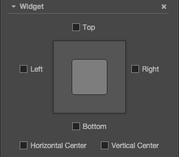
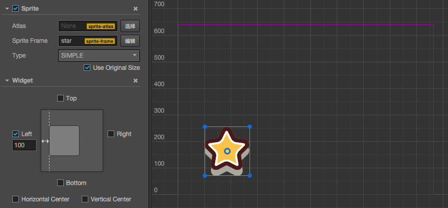
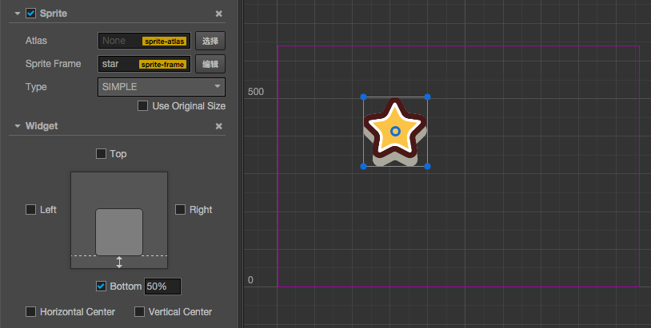
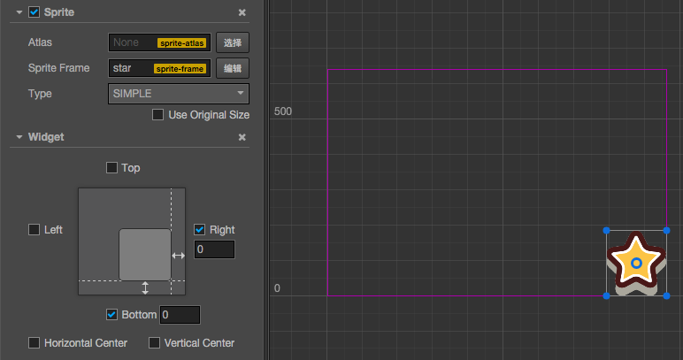
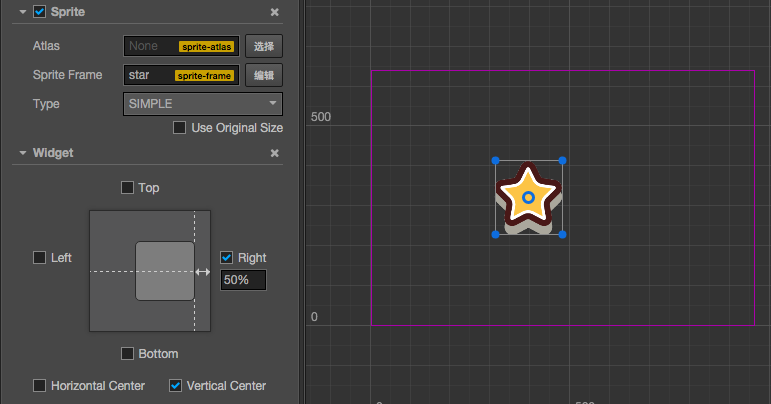
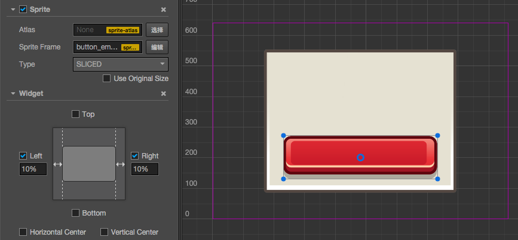

Widget 组件参考
Widget(对齐挂件) 是一个很常用的 UI 布局组件。它能使当前节点自动对齐到父物体的任意位置，或者约束尺寸，让你的游戏可以方便地适配不同的分辨率。

选项
| 选项 | 说明 | 备注 |
|---|---|---|
| Top | 对齐上边界 | 选中后，将在旁边显示一个输入框，用于设定当前节点的上边界和父物体的上边界之间的距离。 |
| Bottom | 对齐下边界 | 选中后，将在旁边显示一个输入框，用于设定当前节点的下边界和父物体的下边界之间的距离。 |
| Left | 对齐左边界 | 选中后，将在旁边显示一个输入框，用于设定当前节点的左边界和父物体的左边界之间的距离。 |
| Right | 对齐右边界 | 选中后，将在旁边显示一个输入框，用于设定当前节点的右边界和父物体的右边界之间的距离。 |
| HorizontalCenter | 水平方向居中 | |
| VerticalCenter | 竖直方向居中 |
对齐边界
我们可以在 Canvas 下面放置一个 Widget，然后做如下一些测试：
左对齐，左边界距离 100 px：

下对齐，左边界距离 50%：
百分比将以父物体的宽或高作为基准 
右下对齐，边界距离 0 px：

居中对齐
水平方向居中：

竖直方向居中，并且右边界距离 50%：

约束尺寸
如果左右同时对齐，或者上下同时对齐，那么在相应方向上的尺寸就会被拉伸。 下面演示一下，在场景中放置两个矩形 Sprite，大的作为对话框背景，小的作为对话框上的按钮。按钮节点作为对话框的子节点，并且按钮设置成 Sliced 模式以便展示拉伸效果。
宽度拉伸，左右边距 10%：

高度拉伸，上下边距 0，同时水平居中：

水平和竖直同时拉伸，边距 50 px：

继续前往 Button 组件参考 说明文档。